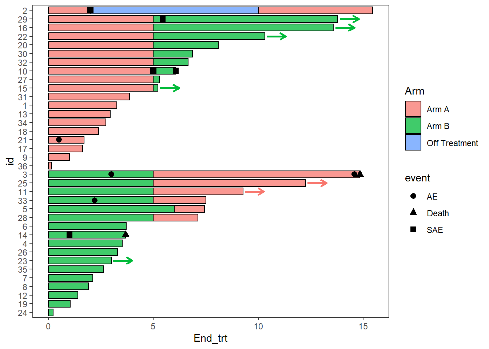

2 A working example
2.1 The Data and research question
- This is a clinical trial of 36 patients in which patients are randomized to one of two treatment arms, at 5 months patients are intended to switch arms, for each patient the adverse events and response information is recorded. The data is stored in three dataframes,
ClinicalTrial.Arm,ClinicalTrial.AE, andClinicalTrial.Response
knitr::kable(head(ClinicalTrial.Arm,10))| id | Arm | End_trt | Continued_treatment | Sex | Age |
|---|---|---|---|---|---|
| 1 | Arm A | 3.26 | NA | F | >=65 |
| 2 | Arm A | 2.00 | NA | F | <65 |
| 2 | Off Treatment | 10.00 | NA | F | <65 |
| 2 | Arm A | 15.45 | NA | F | <65 |
| 3 | Arm B | 5.00 | NA | F | >=65 |
| 3 | Arm A | 14.84 | NA | F | >=65 |
| 4 | Arm B | 3.51 | NA | F | <65 |
| 5 | Arm B | 6.00 | NA | F | >=65 |
| 5 | Arm A | 7.44 | NA | F | >=65 |
| 6 | Arm B | 3.70 | NA | F | <65 |
knitr::kable(head(ClinicalTrial.AE,10))| id | time | event | Related | Sex | Age |
|---|---|---|---|---|---|
| 33 | 2.20 | AE | Likely | M | >=65 |
| 14 | 1.00 | SAE | Possibly | F | <65 |
| 14 | 3.67 | Death | Not Likely | F | <65 |
| 3 | 14.58 | AE | Likely | F | >=65 |
| 29 | 5.44 | SAE | Possibly | M | >=65 |
| 21 | 0.50 | AE | Possibly | M | >=65 |
| 10 | 5.00 | SAE | Not Likely | F | <65 |
| 10 | 6.06 | SAE | Possibly | F | <65 |
| 2 | 2.00 | SAE | Not Likely | F | <65 |
| 3 | 14.84 | Death | Likely | F | >=65 |
knitr::kable(head(ClinicalTrial.Response,10))| id | Response_start | Response_end | Response | Continued_response | Sex | Age |
|---|---|---|---|---|---|---|
| 10 | 3.74 | 6.02 | CR | NA | F | <65 |
| 11 | 1.48 | 2.21 | PR | NA | F | >=65 |
| 12 | 0.20 | 0.67 | CR | NA | F | <65 |
| 13 | 2.07 | 2.59 | CR | NA | F | >=65 |
| 15 | 0.35 | 4.05 | PR | NA | M | >=65 |
| 16 | 4.49 | 7.30 | CR | NA | M | <65 |
| 17 | 1.09 | 1.44 | PR | NA | M | >=65 |
| 18 | 0.55 | 1.32 | CR | NA | M | <65 |
| 19 | 0.00 | 0.96 | PR | 1 | M | >=65 |
| 2 | 3.36 | 8.77 | PR | NA | F | <65 |
2.2 Basic plot
- The
swimmer_plot()function creates the base of the swimmer plot - The required arguments are a dataframe, an id column name, and the column name of where the bars end
- You have the option to add the start time for each bar if there are gaps between sections of bars, or if some bars begin prior to time zero
- By default the bars are in increasing order, but any order can be specified
- A column name for the fill, transparency and colour (outline of the bars) can also be included
- Individual bars can change colour/transparency over time
- Other aesthetics can be manipulated using
geom_bar()arguments (eg. fill,width, alpha)
swimmer_plot(df=ClinicalTrial.Arm,id='id',end='End_trt',fill='lightblue',width=.85)2.3 Modifying the order and colours of the bars
The swimmer_plot() function includes the option for a bar to change colours. Each section of the bars should be in a different row, where each row includes the time that section ends. By default the bars are plotted in increasing order, a column name can be used in the argument id_order to have the bars sorted first by a column, or string of IDs can be specified to have the bars in a specific order. Here the bars are ordered by the starting treatment, and follow up time.
arm_plot <- swimmer_plot(df=ClinicalTrial.Arm,id='id',end='End_trt',name_fill='Arm',
id_order='Arm',col="black",alpha=0.75,width=.8)
arm_plot2.4 Stratification
Plots can be stratified by any variables in the dataframe
swim_plot_stratify <-swimmer_plot(df=ClinicalTrial.Arm,id='id',end='End_trt',name_fill='Arm',
col="black",alpha=0.75,width=.8,base_size = 14,stratify= c('Age','Sex'))
swim_plot_stratify2.5 Adding points
- Points are added with the
swimmer_points()function - The required arguments are a dataframe, an id column name, and the column name of the point’s location
- The shape, size, fill, stroke, and transparency can all be mapped to columns
- The argument adj.y can be used to adjust the height position of points withing a bar
- Other aesthetics can be manipulated using
geom_point()arguments
AE_plot <- arm_plot + swimmer_points(df_points=
ClinicalTrial.AE,id='id',time='time',name_shape =
'event',size=2.5,fill='white',col='black')
AE_plotMultiple aesthetics can be mapped to different columns
arm_plot + swimmer_points(df_points=
ClinicalTrial.AE,id='id',time='time',name_shape =
'event',size=2.5,fill='white',name_col = 'Related')2.6 Adding lines
- Lines are added with the
swimmer_lines()function - The required arguments are a dataframe, an id column name, and the column names of the line’s start and end locations
- The linetype, colour, size, and transparency can all be mapped to columns
- The argument adj.y can be used to adjust the height position of lines withing a bar
- Other aesthetics can be manipulated using
geom_segment()arguments
Response_plot <- arm_plot +
swimmer_lines(df_lines=ClinicalTrial.Response,id='id',start =
'Response_start',end='Response_end',name_col='Response',size=1)
Response_plot2.7 Adding lines and points together
- The function
swimmer_points_from_lines()adds points to a plot at the start and end of each line - The required arguments are the same as
swimmer_lines() - An additional argument “cont” can be used to specify lines which do not end
- Other aesthetics can be manipulated using
geom_point()arguments
Response_plot_with_points <- Response_plot+
swimmer_points_from_lines(df_lines=ClinicalTrial.Response,id='id',start =
'Response_start',end = 'Response_end', cont =
'Continued_response',name_col='Response',size=2)
#> Warning: `gather_()` was deprecated in tidyr
#> 1.2.0.
#> ℹ Please use `gather()` instead.
#> ℹ The deprecated feature was likely used
#> in the swimplot package.
#> Please report the issue to the
#> authors.
#> This warning is displayed once every 8
#> hours.
#> Call
#> `lifecycle::last_lifecycle_warnings()`
#> to see where this warning was generated.
Response_plot_with_points2.8 Adding arrows
- Arrows are added at the end of bars with the
swimmer_arrows()function - The required arguments are a dataframe, an id column name, and the column names of the location the arrows begin
- An additional argument “cont” can be used if only some bars will have an arrow
- The colour can be mapped to a column
- Features of the arrows which can be modified include the size, length and type of arrow
- Other aesthetics can be manipulated using
geom_segment()arguments
The example below uses arrows to demonstrate patients remaining on treatment after the end of follow up
AE_plot+
swimmer_arrows(df_arrows=ClinicalTrial.Arm,id='id',arrow_start='End_trt',
cont = 'Continued_treatment',name_col='Arm',type =
"open",cex=1)Since none of the patients continue on “Off treatment” the arrow colours do not match the bars, this can be fixed by adding the layer scale_color_discrete(drop=FALSE), the option show.legend = FALSE can also be employed as the arrow legend is not necessary
AE_plot <- AE_plot+
swimmer_arrows(df_arrows=ClinicalTrial.Arm,id='id',arrow_start='End_trt',
cont = 'Continued_treatment',name_col='Arm',show.legend = FALSE,type =
"open",cex=1) + scale_color_discrete(drop=FALSE)
AE_plot
Another arrow example, here the arrows are also used to demonstrate a continued treatment
Response_plot_with_points <- Response_plot_with_points+
swimmer_arrows(df_arrows=ClinicalTrial.Response,id='id',arrow_start='Response_end',
cont = 'Continued_response',name_col='Response',show.legend = FALSE,type =
"open",cex=1)
Response_plot_with_points2.9 Making the plots more aesthetically pleasing with ggplot manipulations
2.9.1 Modifying Colours and shapes
AE_plot <- AE_plot +
scale_fill_manual(name="Treatment",values=c("Arm A" = "#e41a1c", "Arm B"="#377eb8","Off Treatment"='#4daf4a'))+
scale_color_manual(name="Treatment",values=c("Arm A"="#e41a1c", "Arm B" ="#377eb8","Off Treatment"='#4daf4a')) +
scale_shape_manual(name="Adverse event",values=c(AE=21,SAE=24,Death=17),breaks=c('AE','SAE','Death'))
AE_plot
Response_plot_with_points <- Response_plot_with_points +
scale_fill_manual(name="Treatment",values=c("Arm A" ="#e41a1c", "Arm B"="#377eb8","Off Treatment"='#4daf4a'))+
scale_color_manual(name="Response",values=c("grey20","grey80"))+
scale_shape_manual(name='',values=c(17,15),breaks=c('Response_start','Response_end'),
labels=c('Response start','Response end'))
Response_plot_with_points
2.9.2 Legends
Sometimes there will be points within the fill of the legend, this can be turned off with the layer guides()
Response_plot_with_points <- Response_plot_with_points+guides(fill = guide_legend(override.aes = list(shape = NA)))
Response_plot_with_points
2.9.3 Add arrows to the legend
A work around to add arrows to the legend is using the symbol for an arrow within annotate()
Response_plot_with_points <- Response_plot_with_points+
annotate("text", x=3.5, y=20.45, label="Continued response",size=3.25)+
annotate("text",x=2.5, y=20.25, label=sprintf('\u2192'),size=8.25)+
coord_flip(clip = 'off', ylim = c(0, 17))
Response_plot_with_points
2.9.4 axis
The swimmer plot is a bar plot that has been turned on its side, so to modify the x axis it is actually required to change the y axis. This is also the case for adding axis labels
Response_plot_with_points + scale_y_continuous(name = "Time since enrollment (months)",breaks = seq(0,18,by=3))
2.9.5 Formatting the legend when an aesthetic is mapped in multiple layers
Sometimes multiple layers of the swimmers plot will include the same aesthetic the plot below uses “fill” with both the points and with the bars. Using guides, and override.aes the legends can be manipulated to divide the layers in the legend
#Overriding legends to have colours for the events and no points in the lines
p1 <- arm_plot + swimmer_points(df_points=ClinicalTrial.AE,id='id',time='time',name_shape =
'event',size=2.5,col='black',name_fill = 'event') +
scale_shape_manual(values=c(21,22,23),breaks=c('AE','SAE','Death'))
p1 +scale_fill_manual(name="Treatment",values=c("AE"='grey90',"SAE" ="grey40","Death" =1,"Arm A"="#e41a1c", "Arm B" ="#377eb8","Off Treatment"="#4daf4a"))
This plot legend is difficult to follow
However, by removing the AE fills from the legend, and adding them to the points it is much easier to follow the plot
#First step is to correct the fill legend
p2 <- p1 + scale_fill_manual(name="Treatment",values=c("AE"='grey90',"SAE" ="grey40","Death" =1,"Arm A"="#e41a1c", "Arm B" ="#377eb8","Off Treatment"="#4daf4a"),breaks = c("Arm A","Arm B","Off Treatment"))
p2
##Then use guides to add the colours to the
#Setting the colours of the filled points to match the AE type
p2 + guides(shape = guide_legend(override.aes = list(fill=c('grey90','grey40',1))),fill = guide_legend(override.aes = list(shape = NA)))